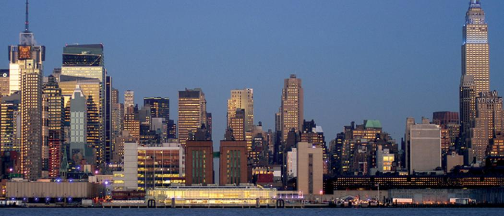
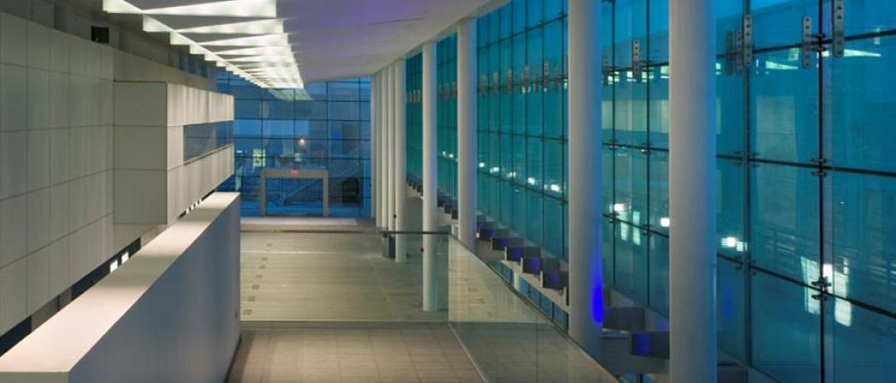

Brooklyn, New York

DGC / BROOKLYN
FAMILY RUN / 1991
FIELD LED
Civil.
Marine.
Building.
Brooklyn crews for hard sites, waterfront work, utility facilities, commercial roofs, and everything in between.
Send the scopeScroll to inspect ↓
West Midtown Ferry Terminal, New York City
Licensed[LICENSE #]
Bonded + insured[BONDING CAPACITY]
Union affiliations[AFFILIATIONS]
NY · NJ · PA · CTOperating region
Concrete masonry roots
New York / New Jersey / Pennsylvania / Connecticut
Barges / cranes / field equipment
01 / Capabilities
What the crews do.
Infrastructure
- Power substations
- Generation plant modernization
- Utility facilities
- Heavy construction
Marine
- Marine structures
- Harbor structures
- Barge-mounted cranes
- East Coast work
Building
- General construction
- Building restoration
- Special projects
- Commercial facilities
Roofing
- Commercial roofing
- Roof replacement
- Roof rehabilitation
- Sealant systems
Field capability
01Barge-mounted cranes
02Own marine equipment fleet
03Power substations
04Large commercial roofs
02 / Selected projects
The project record.
West Midtown Ferry Terminal
Marine · New York City
Published work
Mott Haven Substation
Infrastructure · Bronx, NY
Published work
Astor Substation
Infrastructure · New York, NY
Published work
Newtown Substation
Infrastructure · Long Island City, NY
Published work
Con Edison 74th Street
Roofing · New York, NY
Published work
West Midtown Ferry Terminal Interior
General construction · New York City
Published work
03 / Operating area
The yard is in Brooklyn. The work travels.
D'Onofrio builds throughout New York, New Jersey, Pennsylvania, and Connecticut.
[LICENSED][LICENSE NUMBER]
[BONDED][BONDING CAPACITY]
[INSURED][COVERAGE]
[UNION][AFFILIATIONS]
NY HARBOR
NJ
MANHATTAN
BROOKLYN
QUEENS
DGC BASE ●
04 / Company
The family grew up in the trade.
Jerry, John, and Vincent D'Onofrio formed the company in 1991. Their father ran a concrete masonry business in Brooklyn in the 1950s.
The jobs got larger. The family stayed close to the field.
“[APPROVED CLIENT TESTIMONIAL]”
[CLIENT NAME] / [TITLE] / [ORGANIZATION]
Send the drawings, location, and schedule.
We will look at the work.
Send the scope ↗(718) 832-5700
info@donofrio.biz
info@donofrio.biz
06 / Careers
Work with the crews.
D'Onofrio hires foremen, operators, laborers, and roofers across active projects. Send a resume or stop by the yard.
See open roles →